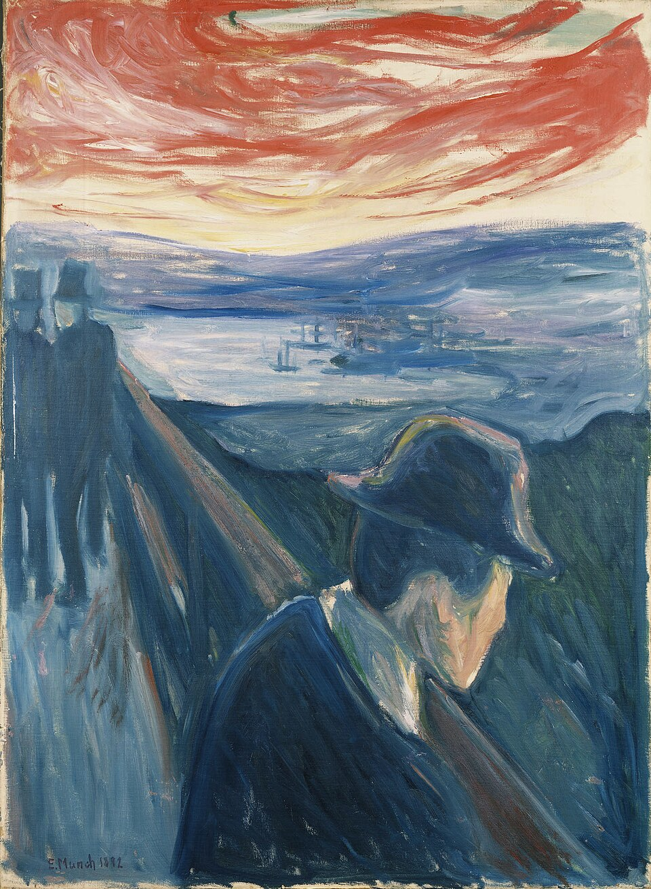
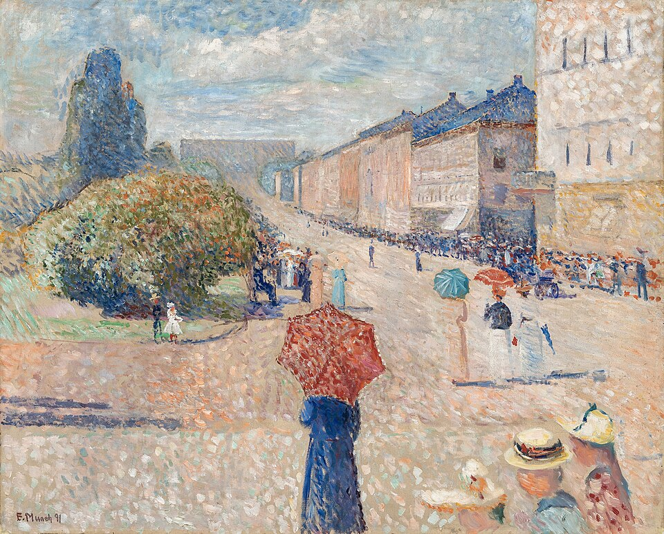

童年與畫畫
出生於挪威，童年主要在克里斯蒂安尼亞（今奧斯陸）度過。母親與姊姊先後因肺結核離世，身體不佳的他在家學習，也持續畫畫。
EDVARD MUNCH · 1880—1900
從風景與日常，走進不安、愛與孤獨。
沿著年代，看孟克如何讓色彩與線條說話。

先看風格，再看故事。
自然的光 → 記憶的色彩 → 心理的線條以原相簿為閱讀起點，加入可核對版本的館藏圖像。現收錄 80 件作品圖像，包含繪畫、素描與版畫；原相簿共有 384 個項目，尚未完整收錄。新增延伸作品的相簿對應仍待逐項核對。
01 / THE WORKS
點開作品，閱讀中文導覽與觀看提示。
年代與風格可以交叉選擇。
沒有符合的作品。試試其他風格，或清除搜尋。
想延伸看更多版本與習作？
查看原相簿的 384 個項目02 / A CHANGE OF VISION
兩年之間，風景的色彩開始承接不同感受。

短筆觸讓人物與街道沐浴在同一片光裡，空間仍然開闊。
斜向欄杆、紅天與藍色海灣，把前景人物放進更強烈的色彩張力。
這是依畫面所作的形式比較；它不替人物診斷心理，也不把風格分期當成精確疆界。兩件圖像的來源均可在作品細節內開啟。
03 / THE ARTIST
1863 — 1944
他反覆回到同一個題材，卻讓每一次回望都產生不同的形狀。
出生於挪威，童年主要在克里斯蒂安尼亞（今奧斯陸）度過。母親與姊姊先後因肺結核離世，身體不佳的他在家學習，也持續畫畫。
1880 年進入皇家藝術與設計學校。早期描繪身邊的人與環境，《病中的孩子》則成為更個人、更具情感表現的重要轉折。
1889 年赴巴黎。1890 年代探索愛、失去與焦慮，把風景與人物轉化為情感的形狀；這些題材逐步形成《生命的飾帶》的核心。
1902 年以《生命的飾帶》呈現一組人生題材。1908 年赴哥本哈根治療，之後回挪威；晚年持續創作，並把大部分作品遺贈奧斯陸市。
生平依 MUNCH 官方年表整理；1901 年後作品不在本次藝廊範圍內。
04 / NOTES & SOURCES
本導覽以 The Museum Without Walls／Le Musée Imaginaire 的「Edvard Munch Explores the Dark Side (1880–1900)」相簿為起點。中文說明以各幅圖像的形狀、色彩、姿態與空間關係重新撰寫，並非原相簿英文介紹的翻譯或改寫。原相簿作為最初閱讀契機，在此保留致謝與連結。
作品細節內附圖像來源、版本年代、媒材、尺寸與收藏地。圖像來源為 Wikimedia Commons：多數檔案標示公有領域，《花園小徑》依 CC BY-SA 4.0 檔案標示署名；本次已撤下四張原相簿複製圖，改用來源明確的其他作品。不同版本、局部圖與尺寸差異另作註記。畫面解讀屬策展觀察，不應當作唯一的作者意圖。
四個年代階段是閱讀路線，並不是孟克自己訂定的分期。各作品的風格標籤用來比較筆觸、色面、線條與構圖，不代表它們只能歸屬一個流派。「表現性語言」指畫面的情緒強度，不能直接等同於後來形成的表現主義運動。